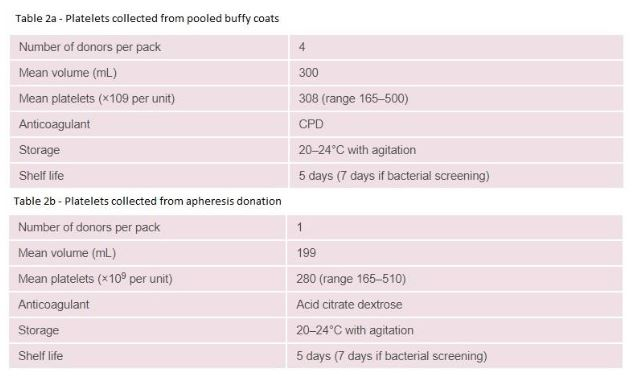

Platelets are enucleated blood cells also known as thrombocytes. They serve as part of the haemostasis cycle by clumping together to form a platelet ‘plug’ at the sight of injury, thus stopping the bleeding. They were discovered in the early 1880s by Giulio Buzzozero. He suggested that these were not like red blood cells or white blood cells thus forming the third element of blood. Platelets are produced by megakaryocytes (MK cells) via a process known as thrombopoiesis. Megakaryocytes are formed by the myeloid progenitors in the bone marrow. These large cells are unique to mammals. They are produced by a complex process known as megakaryopoiesis, with key factors being MPL protein and TPO receptor (Sim et al., 2016). Thrombopoietin (TPO) binds to the receptor c-MPL which activates the JAK/STAT pathway, this stimulates the maturation of megakaryocyte (see fig.1) (Zhang and Zehnder, 2016). Megakaryocytes become larger in size (50-100µm) therefore unable to enter the blood vessels. To overcome this, the megakaryocyte protrudes projections known as proplatelets into the sinusoid pores, where the pressure of contents in the vessel breaks off the projections thus forming platelets. The process of how these become platelets are not clear.
Circulating platelets have a lifespan of 8-10 days where they are then destroyed in the liver and spleen via phagocytosis (Nayak, Kulkarni and Dash, 2013). Each megakaryocyte can form ~3000 platelets during its lifetime, whereas in other sites this is much less. Platelets are critical blood cells; defects in platelets give rise to platelet disorders such as thrombocytopenia which may require platelet transfusions.
Platelet transfusion therapy plays a crucial role in the management of patients with various conditions, which impede hemostasis either through lack of platelet production or clotting factors, which lead to bleeding complications. Since its introduction in the 1950’s countless lives have been saved. However, the availability of platelets relies solely on generous human donations. Ultimately as the treatment regimens get better, this has led to an ageing population which may require support through blood products. This has increased the need for platelet transfusion (see fig.2) with 67% demand coming from haematological malignant patients alone (Estcourt, 2014).
Whatever the reason for an increase in the use of platelets transfusions, ultimately there needs to be a resolution for this demand. There are over 10,000 platelet donors in the UK who have donated platelets. Between mid-2016 to mid-2017 over 79,000 units were donated. Prior to 2013, NHSBT collected at least 80% of platelets using apheresis from a single donor, the thought being to reduce the risk of exposure to vCJD and Hepatitis E virus. However this was reconsidered as it was found that using additive solution with the addition of bacterial screening was much more cost effective (see table 1) (Lozano, Rivera and Vicente, 2012; Platelet Strategy – Phase Two, 2017: SaBTO annual report 13/14).
At present, this demand is being met by changing collection methods whilst also been cost effective. However, with the need to satiate this increasing demand for platelets and ever increasing burden on the NHS, there is a need to plug this gap.
Scientists have researched ways to obtain platelets from stem cells. Stem cell use was first established in bone marrow transplants in the late 1950’s, and still remains the most widely used stem cell therapy today (Henig & Zuckerman, 2014).
Stem cells are undifferentiated cells which have the ability to turn into any cell in the body, thus making them ideal for fixing damaged cells and introducing cells where they were previously absent. Stem cells are sourced from fetal tissue or human embryos (known as embryonic stem cells) or adult stem cells which are located in all places of the body. The main sources for adult stem cells are in the peripheral blood, bone marrow, placenta, umbilical cord blood and epithelial tissue (Bethesda, 2016).
There have been various controversies and ethical issues over the last 30 years concerning research on stem cells, mainly from embryos as it involves the destruction of embryonic cells. Religious groups have argued the belief that life begins at conception, therefore, destroying blastocyst would be equivalent to destroying life. This created various acts in the UK for regulating the use of human cells and tissues until the final establishment of the Human Tissue Authority in 2005, after it was found that Alder Hey hospital in Liverpool was retaining organs from patients without consent, and negligent attitudes toward the then legislation (Human Tissue Act, 2004; Human Tissue Authority, 2017). In America, stem cell research greatly slowed down from 2001 to 2009 when then-President George W Bush limited the use of embryonic stem cell to only a few cell lines.
In 2006 Shinya Yamanaka developed induced pluripotent stem cell technology based on the idea of reprogramming cells from Sir John Gurden. He found by introducing a few genes he was able to reverse mature mice cells into pluripotent stem cells (Nobel Prize, 2017). Subsequently, in 2009, President Barack Obama lifted the ban thus allowing funding for research in stem cells lines with the view of improving treatments for patients (Wolinsky, 2009).
This has led to research of stem cells use for a range regenerative medicine including that blood components such as red cells and platelets.
One such method has been using Yamanaka’s model of induced pluripotent stem cells, by producing human platelets ex vivo which would meet demand exponentially but this method of production has its potential uses and challenges as discussed further.
In order for cells to be safe for human transfusion, the source of the pluripotent stem cell is the most important factor. This needs to take into account yield reproduced (ie/ can large yield be obtained easily to meet demand), free from contamination and disease and universally acceptable thus taking HLA typing into account. Ambient conditions for platelets are vital for their storage and potential production. At present platelets must meet strict conditions to remain viable and sufficient for transfusion (see table 2a&b – adapted from Norfolk, 2013). Platelet production must also consider the environment of production by keeping it as close to in vitro as possible in sterile environments which is not only costly but time consuming.

The exact process of platelet formation is not clear, therefore scientists are using iPSCs to generate precursor of platelets known as megakaryocytes (MK cells) which in turn carry out megakaryopoiesis and production of platelets. As platelets have a short lifespan of around 10 days, scientists are trying to develop methods which create as many MK cells as possible. There have been various methods which differentiate iPSCs into MK cells.
There are many challenges into creating platelets (see fig. 3), which need to be addressed in a step by step to make sustainable methods of safe, viable platelets for transfusion. Things to take into account include contamination risks, an iPSC cell line which is free from antibodies, HLA alloantibodies and bulk producing abilities with no Hayflick limit, whereby cells can divide only a number of time before telomeres get shorter.
In 1995, scientists developed the first method to produce platelets in vitro. They took CD34+ peripheral blood cells and cultured them to grow megakaryocytes. It took 8-10 days to see colonies of mature megakaryocytes, and a further 3-4 days for these cells to exhibit proplatelets with the need of replating of a fresh serum free medium in between. The whole process took about 14 days which generated 40% ±16% megakaryocytes with protruding proplatelets. For every one of these megakaryocytes, scientists obtained about 240 platelets equating to a total of 9,600 ± 3,840 platelets produced (Choi et al., 1995). While this was not enough platelets and it was an expensive method, it became evident that it was possible to culture platelets in the laboratory.
A recent study carried out in the States found megakaryocyte progenitor cell lines (imMKCLs) obtained from either ESC clone KhES3 or iPSC clone 692D2 with c-MYC, BMI1 with the addition of BCL-XL protein at days 14-21 increased imMKCL’s over 5 months before showing any oncogenicity. These cells were viable even after cryopreservation, which suggests cells may be viable long enough for mass production.
Another approach to increasing MK cells were to forward programme megakaryocyte cells (fopMKs). MKs mixed with transcription factors GATA1, TAL1, and FLI1 to enhance MK lines. Bone morphogenetic protein 4 and Fibroblast growth factor 2 were initially added to induce mesoderm differentiation of iPSCs. This was followed up by stem cell factor and thrombopoietin to further derive MKs, and finally the addition of more thrombopoietin with interleukin-1β to allow production of platelets. Researchers were able to cryopreserve these cells and reuse when needed.
Using two different iPSC lines, they achieved MK lineage purity by day 15 post transduction with >50% CD42a+ mature MK cells by day 20. A cell expansion during the single cell culture step led to large quantities of MK cells with up to 28.4±7.8-fold increase at day 20 (see fig.4). As this process took ~20 days to initially induce mesoderm differentiation of iPSCs therefore may be difficult to rely on this method alone for platelet production. Another factor to take into account is the longer each step takes the more there could be a tendency to introduce oncogenicity in cells, however as this is a new concept, it would need to be further studied (Moreau et al., 2016).Another study found fibroblasts turning in MK cells eliminating the need for iPSCs. This study also highlighted that nuclear factor erythroid–derived 2 p45 unit (p45NF-E2), Maf G, and Maf K played a role in megakaryopoiesis and formation of platelets. This could be used to do further research on iPSC derived MK cells and observing yield platelet concentrations (Ono et al., 2012).
In order to create such a vessel, scientists have come up with the concept of a bioreactor. There have been various proposed platforms including 3D vascular microtubes by Di Buduo et al. their bioreactor’s key feature is the silk external layer which consists of protein biomaterial, it has properties that withstand the pressures of the bone marrow (see fig.5). They measured responses to stiffness, co culture with endothelial cells, shear stress, surface topography and changes in extracellular matrix composition. Through various adapting of each response, they updated their model which was able to produce a threefold increase yield of platelets from the initial design. They were able to generate 4x105 number of platelets.
Another study carried out by Thon et al used factors which recapitulates the bone marrow to increase the output of proplatelets hence increase in platelet yield. They used hiPSC-MKs which began producing proplatelets within two hours of culture by manipulating the stress applied. They were able to view the microscopy live by forward and side scatter and measure production using flow cytometry. They were able to produce a total yield of ∼42 PLTs per MK from 5.7×104 ± 3.4×104 MKs per ml (Thon et al., 2014).
While this study produced results very quickly other studies such as that of Avanzi et al took much longer. Avanzi et al produced a step by step bioreactor which consisted of a membrane sandwiched between two flow chambers (see fig 6. It took 3 days to produce platelets which seems too long for large scale production unless it was a none stop flow coupled with donations from people. This would help with demand for platelets by decreasing the burden on blood banks but it could not rule out donations from people.
International haemovigilance schemes involve countries from Europe and rest of the world, who collect and publish data on transfusion transmitted infections (TTI’s) (SaBTO,2014). In the UK, platelet related transfusion reactions have been on the rise since 2014, until the introduction of platelets in additive solution along with educating clinicians to find alternatives to transfusion (see fig.9) (SHOT, 2016).
By introducing iPSCs to manufacture platelets, scientists can re-program cells to switch off signaling for HLA and HPA alloantigen’s, as well as other antigens such as Kell family. They can control the environment which cells are cultured effectively removing risks of contamination if microorganisms by keeping strict sterile conditions at all stages of manufacture. This will not only reduce the number of transfusion related reaction but as the platelets will be free from antigens, this means they would be universal and would be compatible with everyone.Methods such as CRISPR/Cas9 (clustered regularly interspaced short palindromic repeats with CRISPR-associated protein 9) gene editing technology can be used to modify iPSC by editing the structure of the genome of interest. It is based on bacteria which capture selected areas of DNA from viruses. If a virus attacks again the bacteria uses protein CAS9 to splice a selected area of the virus and insert the RNA thus disabling the virus (Zhang et al., 2015).
There have been various studies that have been successful in animals but failures in humans trials, but by using iPSCs, they closely mimic the cell line of interest in humans thus avoiding potential harm to human beings. It is also cheaper to grow cells under laboratory conditions that growing animals in the lab or the rendering the cost of clinical trials.
However, while there are many advantages to using iPSCs, it also has its disadvantages. In various studies carried out using iPSC, researchers have found a range of genetic abnormalities occurring when cells divide. Researchers found iPSC were more prone to oncogenicity. Ji et al performed exome sequencing (WES) of human fibroblasts & the derived iPSCs at two different passages. They found that in vitro passaging contributed 7% to the iPSC coding point mutation load, as well as 19% of the mutations pre-exist as rare mutations in the parental fibroblasts suggesting that the remaining 74% of the mutations were acquired during cellular reprogramming (Ji et al., 2012).Avanzi, M. and Mitchell, W. (2014). Ex Vivoproduction of platelets from stem cells. British Journal of Haematology, 165(2), pp.237-247. Avanzi, M., Oluwadara, O., Cushing, M., Mitchell, M., Fischer, S. and Mitchell, W. (2015). A novel bioreactor and culture method drives high yields of platelets from stem cells. Transfusion, [online] 56(1), pp.170-178. Barfoot, J. (2018). Stem Cell Therapy & Treatment - Diseases and Conditions. [online] Euro Stem Cell. Available at: https://www.eurostemcell.org/what-diseases-and-conditions-can-be-treated-stem-cells [Accessed 20 Dec. 2017]. Bersenev, A. (2012). Platelets generation from human embryonic stem cells. [online] Stem cell assays. Available at: http://stemcellassays.com/2011/02/platelets-generation-from-human-embryonic-stem-cells/ [Accessed 29 Dec. 2017]. Bethesda, M. (2016). Stem Cell Basics I. [online] NIH. Available at: https://stemcells.nih.gov/info/basics/1.htm [Accessed 19 Dec. 2017]. Börger, A. and Eicke, D. (2016). Generation of HLA-Universal iPSC-Derived Megakaryocytes and Platelets for Survival Under Refractoriness Conditions. Molecular Medicine, 22(1), p.1. Choi, E., Nichol, J., Hokom, M., Hornkohl, A. and Hunt, P. (1995). Platelets generated in vitro from proplatelet-displaying human megakaryocytes are functional. Blood, [online] 85(2), pp.402-413. Collins, M. and Thrasher, A. (2015). Gene therapy: progress and predictions. Proceedings of the Royal Society B: Biological Sciences, [online] 282(1821), p.20143003. Cowan, K. (2017). Strategies to reduce inappropriate use of platelet transfusions. [ebook] EMAP. Available at: http://hospital.blood.co.uk/media/28823/nursing-times-platelet-strategy-2017.pdf [Accessed 1 Jan. 2018]. Di Buduo, C., Wray, L., Tozzi, L., Malara, A., Chen, Y., Ghezzi, C., Smoot, D., Sfara, C., Antonelli, A., Spedden, E., Bruni, G., Staii, C., De Marco, L., Magnani, M., Kaplan, D. and Balduini, A. (2015). Programmable 3D silk bone marrow niche for platelet generation ex vivo and modeling of megakaryopoiesis pathologies. Blood, [online] 125(14), pp.2254-2264. Estcourt, L. (2014). Why has demand for platelet components increased? A review. Transfusion Medicine, 24(5), pp.260-268. Feng, Q., Shabrani, N., Thon, J., Huo, H., Thiel, A., Machlus, K., Kim, K., Brooks, J., Li, F., Luo, C., Kimbrel, E., Wang, J., Kim, K., Italiano, J., Cho, J., Lu, S. and Lanza, R. (2018). Scalable Generation of Universal Platelets from Human Induced Pluripotent Stem Cells. ISSCR. Figueiredo, C. and Blasczyk, R. (2015). A future with less HLA: potential clinical applications of HLA-universal cells. Tissue Antigens, 85(6), pp.443-449. Freireich, E. (2011). Origins of Platelet Transfusion Therapy. Transfusion Medicine Reviews, [online] 25(3), pp.252-256. Available at: https://www.sciencedirect.com/science/article/pii/S0887796311000046 [Accessed 1 Jan. 2018]. Genetics Home Reference. (2018). What are genome editing and CRISPR-Cas9?. [online] Available at: https://ghr.nlm.nih.gov/primer/genomicresearch/genomeediting [Accessed 10 Jan. 2018]. Gras, C., Schulze, K., Goudeva, L., Guzman, C., Blasczyk, R. and Figueiredo, C. (2013). HLA-Universal Platelet Transfusions Prevent Platelet Refractoriness in a Mouse Model. Human Gene Therapy, 24(12), pp.1018-1028. Henig, I. and Zuckerman, T. (2014). Hematopoietic Stem Cell Transplantation—50 Years of Evolution and Future Perspectives. Rambam Maimonides Medical Journal, [online] 5(4), p.e0028. Human Tissue Authority. (2018). About us | Human Tissue Authority. [online] Available at: https://www.hta.gov.uk/about-us [Accessed 20 Dec. 2017]. Ji, J., Ng, S., Sharma, V., Neculai, D., Hussein, S., Sam, M., Trinh, Q., Church, G., Mcpherson, J., Nagy, A. and Batada, N. (2012). Elevated Coding Mutation Rate During the Reprogramming of Human Somatic Cells into Induced Pluripotent Stem Cells. STEM CELLS, 30(3), pp.435-440. Josefsson, E., White, M., Dowling, M. and Kile, B. (2011). Platelet Life Span and Apoptosis. Methods in Molecular Biology, 788, pp.59-71. Kolaparthy, L., Sanivarapu, S., Moogla, S. and Kutcham, R. (2015). Adipose Tissue - Adequate, Accessible Regenerative Material. International Journal of Stem Cells, [online] 8(2), pp.121-127. Lambert, M., Sullivan, S., Fuentes, R., French, D. and Poncz, M. (2013). Challenges and promises for the development of donor-independent platelet transfusions. Blood, 121(17), pp.3319-3324. Lee, E., Godara, P. and Haylock, D. (2018). Biomanufacture of human platelets for transfusion: Rationale and approaches. Elsevier. Lefrançais, E., Ortiz-Muñoz, G., Caudrillier, A., Mallavia, B., Liu, F., Sayah, D., Thornton, E., Headley, M., David, T., Coughlin, S., Krummel, M., Leavitt, A., Passegué, E. and Looney, M. (2017). The lung is a site of platelet biogenesis and a reservoir for haematopoietic progenitors. Nature, 544(7648), pp.105-109. Lozano, M., Rivera, J. and Vicente, V. (2012). Concentrates of platelets from whole blood (buffy coat) or obtained by apheresis; What product to use?. Medicina Clínica, [online] 138(12), pp.528-533. Maguire, J., Lu, L., Mills, J., Sullivan, L., Gagne, A., Gadue, P. and French, D. (2016). Generation of Hermansky–Pudlak Syndrome Type 1 (HPS1) induced pluripotent stem cells (iPSCs). Stem Cell Research, [online] 16(2), pp.233-235. Matsubara, Y., Saito, E., Suzuki, H., Watanabe, N., Murata, M. and Ikeda, Y. (2009). Generation of megakaryocytes and platelets from human subcutaneous adipose tissues. Biochemical and Biophysical Research Communications, [online] 378(4), pp.716-720. Mehić, B. (2013). Trend of medicine of the 21st century. Bosnian Journal of Basic Medical Sciences, [online] 13(1), p.3. Available at: https://www.ncbi.nlm.nih.gov/pmc/articles/PMC4478064/ [Accessed 23 Dec. 2017]. Moreau, T., Evans, A., Vasquez, L., Tijssen, M., Yan, Y., Trotter, M., Howard, D., Colzani, M., Arumugam, M., Wu, W., Dalby, A., Lampela, R., Bouet, G., Hobbs, C., Pask, D., Payne, H., Ponomaryov, T., Brill, A., Soranzo, N., Ouwehand, W., Pedersen, R. and Ghevaert, C. (2016). Large-scale production of megakaryocytes from human pluripotent stem cells by chemically defined forward programming. Nature Communications, [online] 7, p.11208. Available at: https://www.nature.com/articles/ncomms11208 [Accessed 4 Jan. 2018]. Nakamura, S., Takayama, N., Hirata, S., Seo, H., Endo, H., Ochi, K., Fujita, K., Koike, T., Harimoto, K., Dohda, T., Watanabe, A., Okita, K., Takahashi, N., Sawaguchi, A., Yamanaka, S., Nakauchi, H., Nishimura, S. and Eto, K. (2014). Expandable Megakaryocyte Cell Lines Enable Clinically Applicable Generation of Platelets from Human Induced Pluripotent Stem Cells. Nayak, M., Kulkarni, P. and Dash, D. (2013). Regulatory Role of Proteasome in Determination of Platelet Life Span. Journal of Biological Chemistry, 288(10), pp.6826-6834. NHSBT (2017). Information request. [online] Available at: https://www.whatdotheyknow.com/request/419308/response/1020680/attach/3/RoseRussellRpy1.pdf?cookie_passthrough=1 [Accessed 1 Jan. 2018]. Norfolk, D. (2013). Handbook of transfusion medicine. 5th ed. UK: The Stationery Office, p.Section 3. NobelPrize. (2017). Unlocking the Secrets of Our Cells: The Nobel Prize - Media Player at Nobelprize.org. [online] Available at: https://www.nobelprize.org/mediaplayer/index.php?id=1781 [Accessed 20 Dec. 2017]. Nurhayati, R., Ojima, Y. and Taya, M. (2016). Recent developments in ex vivo platelet production. Cytotechnology, 68(6), pp.2211-2221. Ono, Y., Wang, Y., Suzuki, H., Okamoto, S., Ikeda, Y., Murata, M., Poncz, M. and Matsubara, Y. (2012). Induction of functional platelets from mouse and human fibroblasts by p45NF-E2/Maf. Blood, [online] 120(18), pp.3812-3821. Pint of Science (2018). Episode 3 of Stem Cell Exchanges, with Cédric Ghevaert.. [podcast] Available at: https://soundcloud.com/pint-of-science/stem-cell-exchange-with-cedric-ghevaert [Accessed 20 Dec. 2017]. Platelet Strategy – Phase Two. (2017). [online] NHSBT Board. Available at: https://nhsbtdbe.blob.core.windows.net/umbraco-assets-corp/2293/platelet-supply.pdf [Accessed 1 Jan. 2018]. Ribatti, D. and Crivellato, E. (2007). Giulio Bizzozero and the discovery of platelets. Leukemia Research, 31(10), pp.1339-1341. SaBTO. Pathogen Inactivation Of Platelets - Report Of The Sabto Working Group. (2014). [ebook] SaBTO. Available at: https://www.gov.uk/government/uploads/system/uploads/attachment_data/file/324354/SaBTO_platelets_report.pdf [Accessed 10 Jan. 2018]. SaBTO. (2014). Platelet transfusion infection: risk review - GOV.UK. [online] Available at: https://www.gov.uk/government/publications/platelet-transfusion-infection-risk-review [Accessed 10 Jan. 2018]. SaBTO annual report 13/14. (n.d.). [online] SaBTO. Available at: http://odt.nhs.uk/pdf/SABTO_Annual_Report_2013_14.pdf [Accessed 1 Jan. 2018]. Scudellari, M. (2016). How iPS cells changed the world. Nature, [online] 534(7607), pp.310-312. Available at: http://www.nature.com/news/how-ips-cells-changed-the-world-1.20079 [Accessed 23 Dec. 2017]. SHOT. (2016). SHOT Annual Reports and Summaries - Serious Hazards of Transfusion. [online] Available at: https://www.shotuk.org/shot-reports/ [Accessed 10 Jan. 2018]. Singh, V., Kalsan, M., Kumar, N., Saini, A. and Chandra, R. (2015). Induced pluripotent stem cells: applications in regenerative medicine, disease modeling, and drug discovery. Frontiers in Cell and Developmental Biology, 3. Sim, X., Poncz, M., Gadue, P. and French, D. (2016). Understanding platelet generation from megakaryocytes: implications for in vitro-derived platelets. Blood, [online] 127(10), pp.1227-1233. Available at: https://www.ncbi.nlm.nih.gov/pmc/articles/PMC4786833/ [Accessed 23 Dec. 2017]. Sugimoto, N. and Eto, K. (2017). Platelet production from induced pluripotent stem cells. Journal of Thrombosis and Haemostasis, 15(9), pp.1717-1727. Sugimoto, N. and Eto, K. (2017). Platelet production from induced pluripotent stem cells. Journal of Thrombosis and Haemostasis, [online] 15(9), pp.1717-1727. The Human Tissue Act 2004.(Commencement No.5 and Transitional Provisions) Order 2006. Thon, J., Mazutis, L., Wu, S., Sylman, J., Ehrlicher, A., Machlus, K., Feng, Q., Lu, S., Lanza, R., Neeves, K., Weitz, D. and Italiano, J. (2014). Platelet bioreactor-on-a-chip. Blood, [online] 124(12), pp.1857-1867. Thon, J., Medvetz, D., Karlsson, S. and Italiano, J. (2015). Road blocks in making platelets for transfusion. Journal of Thrombosis and Haemostasis, [online] 13(S1), pp.S55-S62. University of Leicester. (2018). Human Embryonic Stem Cell Research — University of Leicester. [online] Available at: https://www2.le.ac.uk/projects/genie/gs/law/lawembryonic [Accessed 18 Dec. 2017]. Weyrich and Zimmerman. (2013). Platelets in Lung Biology. Annual Review of Physiology, 75(1), pp.569-591. Wolinsky, H. (2009). The pendulum swung. President Barack Obama removes restrictions on stem-cell research, but are expectations now too high?. EMBO reports, 10(5), pp.436-439. Yamamoto, R., Morita, Y., Ooehara, J., Hamanaka, S., Onodera, M., Rudolph, K., Ema, H. and Nakauchi, H. (2013). Clonal Analysis Unveils Self-Renewing Lineage-Restricted Progenitors Generated Directly from Hematopoietic Stem Cells. [online] Cell Stem cell. Yamanaka, S. (2012). Induced Pluripotent Stem Cells: Past, Present, and Future. Cell Stem Cell, 10(6), pp.678-684. Zhang, B. and Zehnder, J. (2016). ROS: novel regulators of thrombopoiesis. Blood, 128(5), pp.613-614. Zhang, N., Zhi, H., Curtis, B., Rao, S., Jobaliya, C., Poncz, M., French, D. and Newman, P. (2015). CRISPR/Cas9-mediated conversion of human platelet alloantigen allotypes. Blood, 127(6), pp.675-680. Zwaka, T. (2017). Use of Genetically Modified Stem Cells in Experimental Gene Therapies | stemcells.nih.gov. [online] National Institutes of Health, U.S. Department of Health and Human Services. Available at: https://stemcells.nih.gov/info/Regenerative_Medicine/2006Chapter4.htm [Accessed 23 Dec. 2017].